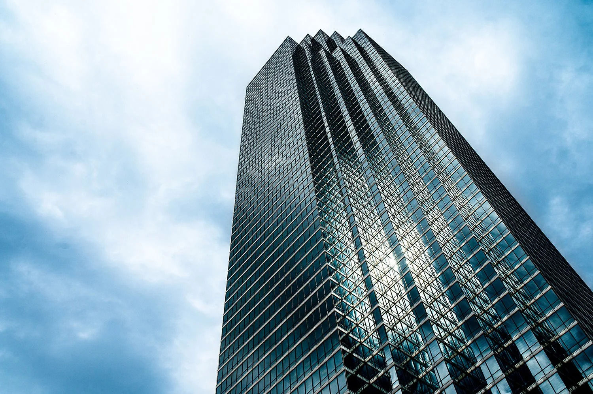
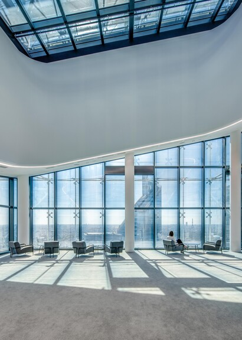
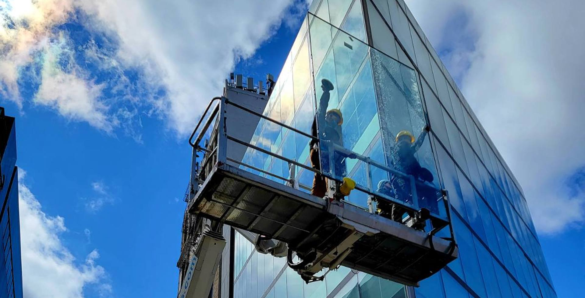

Skyline Prism
Chicago, USA - 2022
The Skyline Prism, located in the heart of Chicago, USA, stands as a testament to modern architectural ingenuity, characterized by its sharp, geometric lines and an expansive glass facade that reaches toward the sky. The perspective from the base emphasizes its monumental height, as the building tapers upward in a series of stepped, crystalline tiers. This design not only maximizes natural light for the interior spaces but also allows the building to blend seamlessly with the atmosphere, appearing almost translucent against the overcast, pale white sky that surrounds its peak.
The most captivating feature of the Skyline Prism is its highly reflective surface, which transforms the tower into a giant urban mirror reflecting the dense Chicago environment. The glass panes capture and distort the silhouettes of neighboring buildings, creating a complex collage of industrial shapes and shadows. These reflections add a layer of dynamic visual depth, as the straight lines of the tower interact with the curved and striped patterns of the surrounding cityscape reflected on its skin.
At the base, the structure features a prominent glass atrium corner that anchors the soaring tower to the street level. This transparent section reveals the internal skeletal framework, offering a glimpse into the building's robust engineering. The precision of the glass joints and the clean, sharp angles of the corner highlight the meticulous craftsmanship involved in its construction. As the eye travels from the solid foundation up to the vanishing point at the top, the building evokes a sense of infinite progress and ambition.



